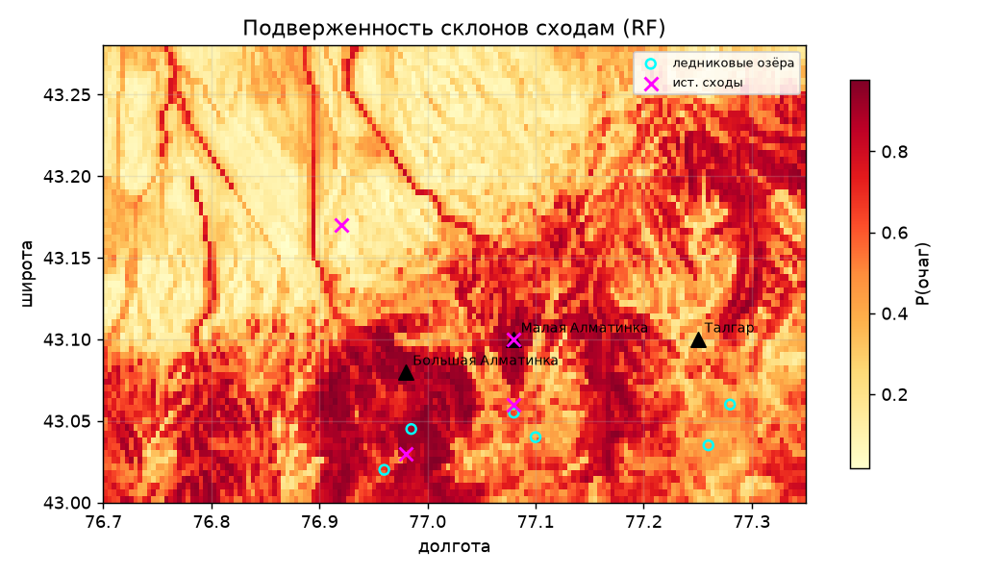
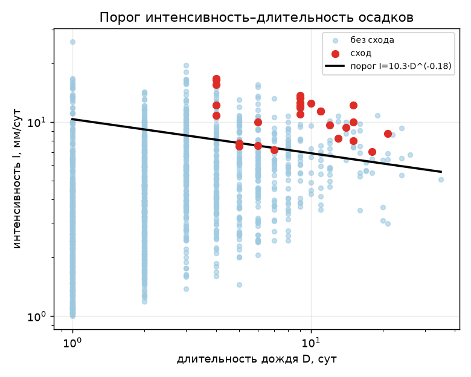
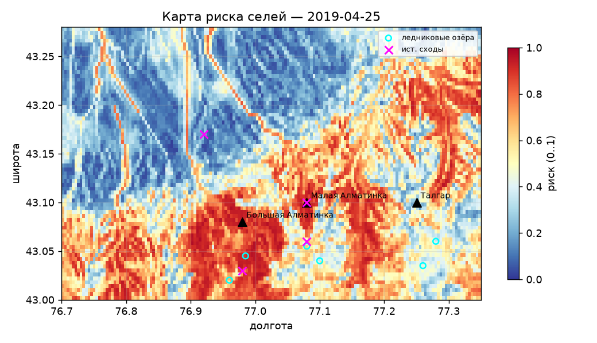
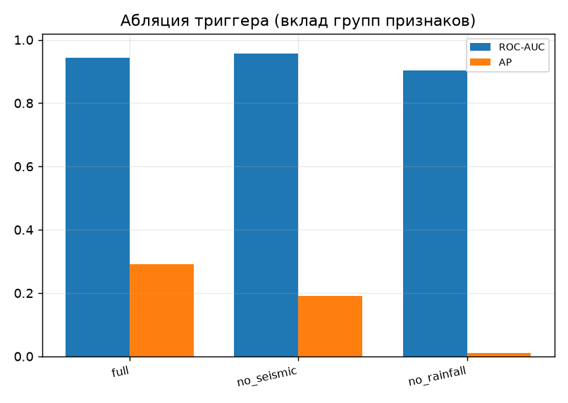

Алматы стоит на конусах выноса рек Заилийского Алатау. Катастрофические сели 1921 (М. Алматинка), 1963 (прорыв оз. Иссык) и 1973 (остановлен плотиной Медеу) уносили жизни и разрушали инфраструктуру.
Деградация оледенения увеличивает число и объём моренно-подпрудных озёр → растёт угроза прорывных селей (GLOF). Нужна количественная, воспроизводимая оценка риска на открытых данных.
Построить модель риска селей для бассейнов над Алматы и оценить вклад гидрометеорологических и сейсмических факторов.
НовизнаПодверженность — пространственная кросс-валидация (без утечки по автокорреляции). Триггер — временной holdout (обучение 2016–2019, тест 2020–2023).

Реальные данные: рельеф GLO-30 + осадки ERA5-Land 2016–2023; среднее ± СКО по 8 seed (триггер 0.91 ± 0.08). AP триггера ≈ 0.18 — низкий из-за редкости событий (~0.4 % дней, в тесте всего 7).

Сейсмика — вторичный триггер.
Абляция на реальных данных: убрать осадки — AP падает в 26 раз, убрать сейсмику — ROC-AUC не снижается. В важности признаков лидируют дождь за 3 дня и увлажнённость грунта, сейсмика = 0. Как и в природе селей Алматы (GLOF + ливни).
По реальным данным ERA5: 50–52 мм за 3 дня на насыщенный грунт — сработали все три бассейна. Максимальный риск (до 0.98) — в зонах формирования на крутых склонах ниже моренных озёр; долины и водоразделы — низкий риск.


Вероятность схода селя (%) по погоде, архиву
2016–2023 и живому прогнозу:
https://dulattastanbay-dev.github.io/selrisk-almaty/